Nie każdy, kto był na szczycie, jest alpinistą
Start
W branży projektowej wszyscy są już na szczycie.
Wszyscy wygłaszają wzniosłe inwokacje.
Wszyscy mają przepiękne kadry.
A coraz mniej osób chce się wspinać.
Większość z nas nigdy się nie dowiedziała, czy miała rację.
Wdrożyliśmy, pokazaliśmy, opisaliśmy, poszliśmy dalej.
Nikt nie wrócił sprawdzić.
A mimo to mówimy bardzo pewnym głosem — na scenach i przy stołach, przy których zapadają decyzje.
Prawda jest bezlitosna.
Góra szybko weryfikuje.
Albo wejdziesz.
Albo nie.
Więc zanim pójdziemy dalej, warto zadać sobie jedno pytanie:
Czy tak naprawdę wiesz, jak się wspinać?
Pilsko
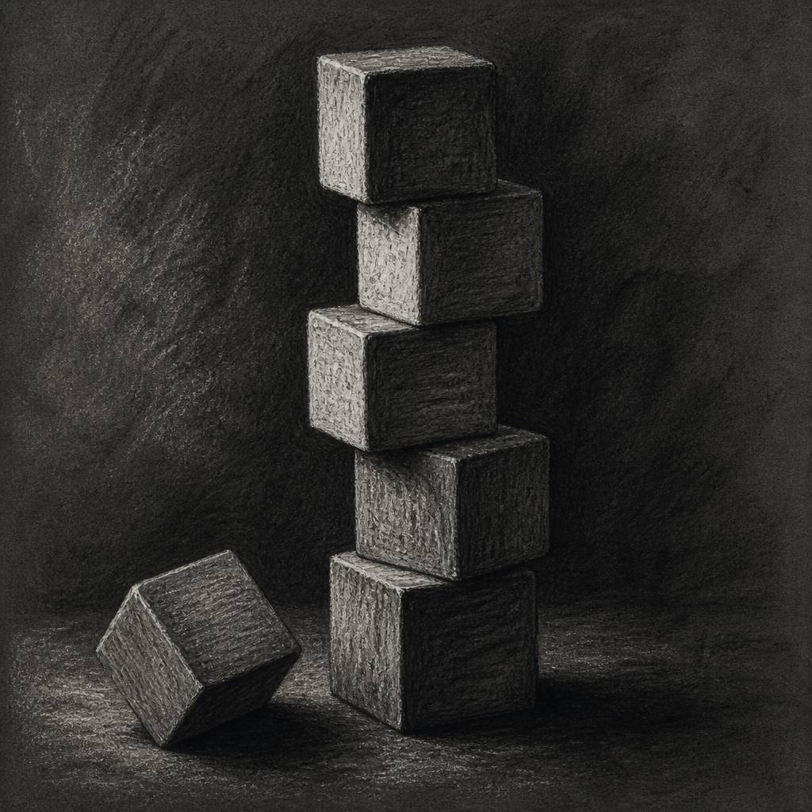
Kiedy myślę o swoim dzieciństwie, myślę o Beskidach. Pasję do gór zaszczepił we mnie ojciec i została ze mną do dziś. Z każdym rokiem robi się ona bardziej głodna. Karmię ją więc systematycznie. To w niej widzę najwięcej swojej filozofii.
Góry mogą sporo nauczyć. Nie liczą się z Twoim planem. Nie liczą się z Twoim zmęczeniem. One po prostu są. I pozostaną na długo po nas.
Zacznijmy od początku. Czy pamiętasz swój dziecięcy szczyt? Niekoniecznie pierwszy. Taki, który udało Ci się zdobyć i z którego byłeś naprawdę dumny. Tylko Ty i góra. I być może bliscy, którzy szli obok. Czy pamiętasz, jak wyglądał ten dzień? Jaka była pogoda?
Moim jest chyba Pilsko, zdobyte od strony Sopotni Wielkiej. Minęło tyle lat, a do dziś pamiętam z tamtego dnia kilka bardzo wyraźnych kadrów. Ciepły, słoneczny dzień. Wodospad, który robił na małym człowieku ogromne wrażenie. Ból dziecięcych nóg. I irytowanie taty ciągłym „czy długo jeszcze?”.
Pytania dzieci są fascynujące. Myślę, że dziecko można zdefiniować przez świat zapętlony w „co to?” i „dlaczego?”.
Z jakiego materiału zrobione są myśli? Skoro pingwiny to ptaki, to czy robią sobie gniazda ze śniegu? Gdzie mieszka echo, kiedy nic nie mówię? Skąd góra wie, kiedy przestać rosnąć?
A czy Ty pamiętasz swoje dlaczego?
Czy obecnie pytamy z ciekawości? Czy dlatego, że tak wypada? Często to nie ciekawość, a pięknie zainscenizowana gra. Pytania nieszukające odpowiedzi. Kurtuazja? A może tylko zaznaczenie obecności na kolejnym spotkaniu o tym samym szarym problemie.
Czasami to nie kurtuazja. Czasami to po prostu strach.
A przecież chwilę temu budowaliśmy konstrukcje z LEGO. Rozkręcaliśmy zabawki, żeby zobaczyć, co jest w środku. Gorzej potem szło ich ponowne składanie. Stawialiśmy architektoniczne dzieła sztuki z desek i gałęzi, a czasem z koców, stołów i puf. Rysowaliśmy kredą tory wyścigowe, a naszymi samochodami były zwykłe kapsle po piwie. Chociaż sama ta zwykłość już była niezwykła.
Nie mieliśmy procesów. Nie było design systemu. Ani Figmy. Była za to ciekawość i potrzeba sprawdzenia:
„Co się stanie, jeśli zrobię to inaczej?”
Nie chodziło o to, żeby od razu zrobić coś idealnego. Chodziło o to, żeby spróbować.
Rozebrać. Złożyć. Zmienić. Sprawdzić. Czasem włożyć do ogniska i spalić. A potem spróbować jeszcze raz. I jeszcze raz.
Do dziś zresztą rozkręcam rzeczy. Składam. Sprawdzam. Zmieniam. Może rzadziej spalam. Czasem dlatego, że coś mnie po prostu wkurza. Czasem z czystej ciekawości. Nie po to, żeby ocenić — po to, żeby zobaczyć, dlaczego ktoś podjął taką decyzję.
Beskidy to był poligon idealny. Ich łagodna natura i dziecięca ciekawość — trudno o lepsze połączenie.
Piękno tych terenów sprawiło, że z każdą wizytą poruszałem się po nich coraz sprawniej. Z każdą herbatą wypitą w ich towarzystwie czułem się coraz pewniej. Stały się moim domem. Którędy najszybciej wejść. Na którym rozwidleniu skręcić. Czego spodziewać się po dobrze znanej drodze.
Byłem bardzo dobry w poruszaniu się po znanym terenie.
Wtedy jeszcze nie wiedziałem, że nie wszystkie góry wyglądają tak samo. Ani jak brutalne może okazać się wyjście poza wydeptany szlak.
koniec rozdziału 1 z 11 · do końca ok. 38 min
Dolina Pięciu Stawów
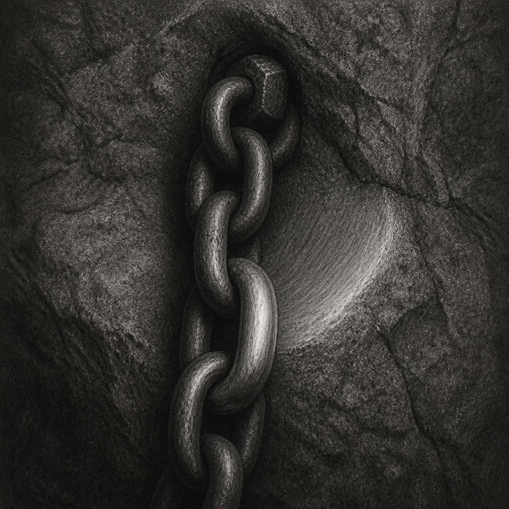
Na studiach pierwszy raz pojechałem w Tatry. Tydzień spędzony z przyjaciółmi w schronisku w Dolinie Pięciu Stawów całkowicie przeprojektował sposób, w jaki patrzę na świat.
Wizualnie — księżycowe wręcz piękno.
Kondycyjnie — o wiele cięższe doświadczenie.
Ekspozycyjnie — trochę strasznie.
Wszystko było nowe. Każda góra skrywała swoje tajemnice.
Szybko okazało się, że nie wystarczy znać drogi. Trzeba jeszcze wiedzieć, jak się po niej poruszać.
Pamiętam pierwszą styczność z łańcuchami. Świeżo poznaną zasadę trzech punktów podparcia. Gdyby ktoś wtedy spojrzał na moje dłonie, zobaczyłby, jak mało mam pewności siebie. Turysta w obcym, nieznanym otoczeniu.
I jak to z turystami bywa, porwałem się na klasyka. Orla Perć.
Do dziś pamiętam zdziwienie, kiedy udeptana ścieżka skończyła się, a przede mną stanęła pionowa ściana.
Ściana. Koniec ścieżki. WTF…
Zrobiłem najtrudniejszy polski szlak spontanicznie. Bez wiedzy. Bez planu. Bez kasku. W jeansach. Do końca nieświadomy tego, czego ta góra wymaga. Nie obyło się bez ryzykownych sytuacji.
Nie traktuję tamtej wyprawy jako błędu. Raczej jako kamień milowy. Przeszedłem ten szlak — ale nie dlatego, że umiałem. Dlatego, że miałem szczęście.
Wtedy myślałem inaczej. Wtedy myślałem, że dałem radę.
Z czasem zacząłem rozumieć, że odwaga i brak świadomości ryzyka to dwie zupełnie różne rzeczy. Bo wynik nie zawsze jest dowodem kompetencji.
I mogę dziś powiedzieć, że zrobiłem Orlą Perć. To prawda. Tak samo prawdą jest, kiedy ktoś pisze w CV, że prowadził projekt, przy którym był. Sam tak pisałem. Jedno i drugie brzmi dobrze. Jedno i drugie niczego nie mówi o tym, czy ta osoba wiedziała, co robi.
Bo to są dwa różne zdania:
„Byłem przy tym.”
„Podjąłem tę decyzję i jej broniłem.”
Pierwsze mówi, że przeszedłeś szlak. Drugie, że go prowadziłeś.
W projektowaniu też miałem swoje jeansy. Sam też byłem pasażerem przy decyzjach, jakie zapadały przy stole. Wchodziłem w problemy, których jeszcze dobrze nie rozumiałem, z przekonaniem, że skoro potrafię coś zrobić, to znaczy, że wiem, co robię. Mimo wszystko często stawiałem na swoim. Bo przecież byłem ekspertem.
Chyba każdy ma takie momenty. Różnica polega na tym, czy po czasie potrafimy je rozpoznać.
Ile razy biznes spojrzał na Ciebie jak na turystę w jeansach?
I ile razy miał rację?
Ile razy byłeś tylko pasażerem?
Wróciłem do domu z dziwnym głodem. Wróciłem w Beskidy i zacząłem eksperymentować. Warianty nocne. Zimowe. Na azymut. Samotne i z przyjaciółmi. Czasem kilkudniowe. Potem to samo, tylko innymi drogami i w innym tempie.
Chciałem poznać górę z każdej możliwej strony. Ukraść trochę jej tajemnic. Zrozumieć, jak się zmienia i jak ja się przy tym zmieniam. Okazało się, że znajomość Beskidów przestaje wystarczać, kiedy największym wyzwaniem nie jest już znalezienie drogi, tylko własna głowa.
Przyszedł czas na lęk wysokości. Ferraty. Wspinanie. Jura. Drogi taternickie. Dłonie coraz rzadziej zdradzały niepewność. Następnie kursy i podejścia alpejskie. Kolejne góry i kolejne wyzwania.
I chyba w tym momencie zacząłem rozumieć coś ważnego:
Im więcej wiem o górach, tym bardziej wiem, jak dużo jeszcze o nich nie wiem.
koniec rozdziału 2 z 11 · do końca ok. 36 min
Kozi Wierch
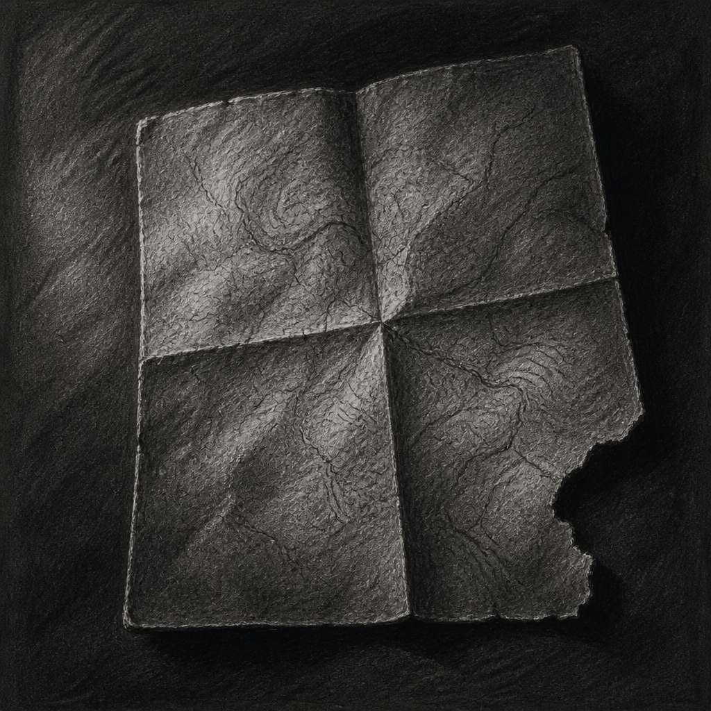
Na Kozim Wierchu byłem dwa razy. Za pierwszym razem jako turysta. Bodajże w 2013 roku. Za drugim — dwanaście lat później. Tym razem jako ktoś, kto doceniał już piękno tego terenu i zaczynał je rozumieć.
Ta sama góra. Ta sama droga. Czerwony szlak przez Zawrat, czyli Orla Perć. Można tam zresztą wejść jeszcze inaczej — zwykłym, czarnym szlakiem od Pięciu Stawów. Bez łańcuchów i innych ubezpieczeń. Ten sam szczyt, to samo zdjęcie. Ale zupełnie inna góra.
Z pierwszego razu pamiętam niewiele. Większość momentów, którymi mógłbym się delektować, ograniczała się do strachu. Może nie był to strach paraliżujący, ale na pewno czułem dyskomfort i niepewność swoich ruchów. Jakoś ukończyłem ten szlak. Znalazłem się na szczycie. Zrobiłem zdjęcie. Cyk. Rozdział zamknięty. Nieprędko chciałem to powtarzać.
Porwałem się na coś trudnego. Bez odpowiedniej wiedzy. Pewnie nogi miałem z galarety — potwierdzi to kolega, który mnie wtedy widział.
Mimo wszystko czułem dumę. Traktowałem to jako swój prywatny sukces.
Za drugim razem byłem w szoku. Minęło tyle lat, a ja szybko zacząłem rozpoznawać charakterystyczne formacje skalne. Konkretne miejsca. Utrudnienia, które kiedyś zapamiętałem.
To zaskakujące, jak działa nasza pamięć. Jak pamięta detale. I to sprzed tylu lat. A jednocześnie ma problem z przypomnieniem sobie, co robiliśmy dnia poprzedniego.
Mogłem zmierzyć się z tym samym terenem jeszcze raz. I wiesz co? Zrobiłem to z uśmiechem na twarzy. Każdy krok był przemyślany i pewny. Co śmieszniejsze — tym razem nie było towarzysza, który utrudniał mi pierwsze przejście. Nie było lęku wysokości.
Nic się nie zmieniło (no może poza słynną drabinką). Zmieniłem się ja.
I dopiero wtedy zrozumiałem, że za pierwszym razem przeszedłem ten szlak jako pasażer. Ktoś, kto chciał tylko odhaczyć kolejną „fajną rzecz”. Dopiero teraz mogłem zrozumieć tę drogę. Docenić ją. Świadomie mierzyć się z tym, co stawiała przede mną każda formacja skalna.
Szlak to nie góra.
Możesz znać trasę. Wiedzieć, gdzie skręcić, gdzie chwycić za łańcuch, gdzie zaczyna się trudniejszy fragment. Możesz przejść ją dziesięć razy. To nadal nie znaczy, że rozumiesz górę.
Do tego trzeba dojrzeć.
Dlaczego więc tak często ufamy jednej mapie?
W projektowaniu mamy swoje mapy i bardzo niechętnie z nich schodzimy. Najbezpieczniejszą z nich jest zdanie: „to zależy od kontekstu”.
Oczywiście, że zależy. Problem zaczyna się wtedy, kiedy to zdanie przestaje być początkiem rozmowy i staje się jej wygodnym końcem. Bo czasem projektant nie ma argumentu. Nie zrozumiał jeszcze problemu. Albo po prostu nie wie. I wtedy najłatwiej powiedzieć: „to zależy od kontekstu”. Albo: „bo tak mówią heurystyki Nielsena”.
Temat zamknięty. Szlak zaliczony. Jeszcze tylko zdjęcie. Cyk. Możemy iść dalej.
Tylko że heurystyka nie jest argumentem. Jest narzędziem.
Heurystyki mają swoje lata. Wielu z nas zna je tak dobrze, że stosuje je odruchowo, nie pamiętając, że kiedyś uczyliśmy się ich jako zasad. I nie chodzi o to, że są bezużyteczne. Przeciwnie. Problem zaczyna się wtedy, kiedy przestajemy patrzeć na konkretną górę, bo przecież mamy już mapę.
Jest jeszcze trzecia mapa, najlepiej ubrana z nich wszystkich: „badania pokazały”.
Kiedyś zapytałem wprost projektanta wyżej ode mnie: jakie badania? Co dokładnie pokazały?
Badania nagle przestały istnieć. Ta mapa nigdy nie została narysowana.
Bywa i tak, że istnieje — tylko trochę inaczej, niż wygląda. Osiem wywiadów, z których w prezentacji cytuje się dwa. Te, które pasowały pod tezę. Reszta zostaje w pliku, do którego nikt nie wróci. Dlatego kiedy ktoś opowiada mi o swoim researchu, najciekawsze pytanie nie brzmi „co wyszło?”. Brzmi: „co znaleźliście takiego, co Wam nie pasowało?”. Jeśli nie ma odpowiedzi, to nie były badania. To była mapa narysowana pod trasę, którą i tak chcieliśmy iść.
Nie zmieniamy mapy po kontakcie z terenem. Zmieniamy opowieść o tym, co zobaczyliśmy.
Jeżeli wszystko rzekomo zależy od kontekstu, ale na każdy kontekst mamy w kieszeni tę samą gotową odpowiedź — to czy aby na pewno patrzymy na ten sam szczyt?
Mont Blanc jest dobrym przykładem. Droga, którą przez lata opisywano jako klasyczną, wciąż widnieje na mapach w niezmienionej formie. Ale sama góra nie jest już taka sama.
Topnieje lód. Rozmarza zmarzlina, która przez tysiące lat trzymała skały na miejscu. Obrywów jest dziś około dziesięć razy więcej niż dwie dekady temu. Tam, gdzie jeszcze niedawno szło się po niemal płaskim lodowcu, trzeba było założyć linę poręczową.
Latem 2026 wszystkie trzy najczęściej wybierane drogi na Mont Blanc były przez pewien czas niedostępne jednocześnie. Pierwszy raz od 1786 roku, czyli od pierwszego wejścia na ten szczyt.1
Mapa nadal grzecznie pokazuje tę samą linię. Tylko że góra pod nią zdążyła się zmienić.
Mapa nie musi być zła, żeby zaprowadzić Cię w złe miejsce. Wystarczy, że przestała pasować do terenu.
Z produktami jest identycznie. Zmienia się technologia. Rynek. Zachowania użytkowników. Możliwości biznesu. To, co działało bezbłędnie trzy lata temu, dziś może być przepisem na katastrofę.
Czasem zresztą mapy nie wybierasz sam. Dostajesz ją gotową. Ticket w Jirze opisany jeden do jednego. Ustalenia zapadły wcześniej. Bez Ciebie. Ty masz tylko „narysować”.
Kolorujesz. Czy nadal jesteś projektantem?
To zależy od kontekstu.
Czasem nie dostajesz mapy dlatego, że ktoś uważa ją za najlepszą.
Dostajesz ją, bo organizacja pamięta poprzednią wyprawę.
Bo prowadzenia nie dostaje się na prośbę. Nikt nie oddaje pierwszego miejsca w zespole dlatego, że ktoś o nie poprosił. Oddaje je, kiedy zobaczy, jak stawiasz nogi.
Więc weź jeden mały fragment. Zrób go inaczej, niż mówi ticket. I pokaż różnicę. Nie musisz zmieniać świata. Wystarczy, że pokażesz, że mogło być inaczej.
Możesz świetnie znać Figmę, design system i branżowe standardy. To jest wartościowa kompetencja. Ale czym innym jest znajomość wydeptanej ścieżki, a czym innym sztuka poruszania się w ciężkim terenie.
Dobry projektant nie musi znać każdej góry.
Powinien umieć poruszać się po górach.
Bo kiedy kończy się wydeptany szlak, zaczyna się prawdziwa wspinaczka.
koniec rozdziału 3 z 11 · do końca ok. 32 min
Mnich
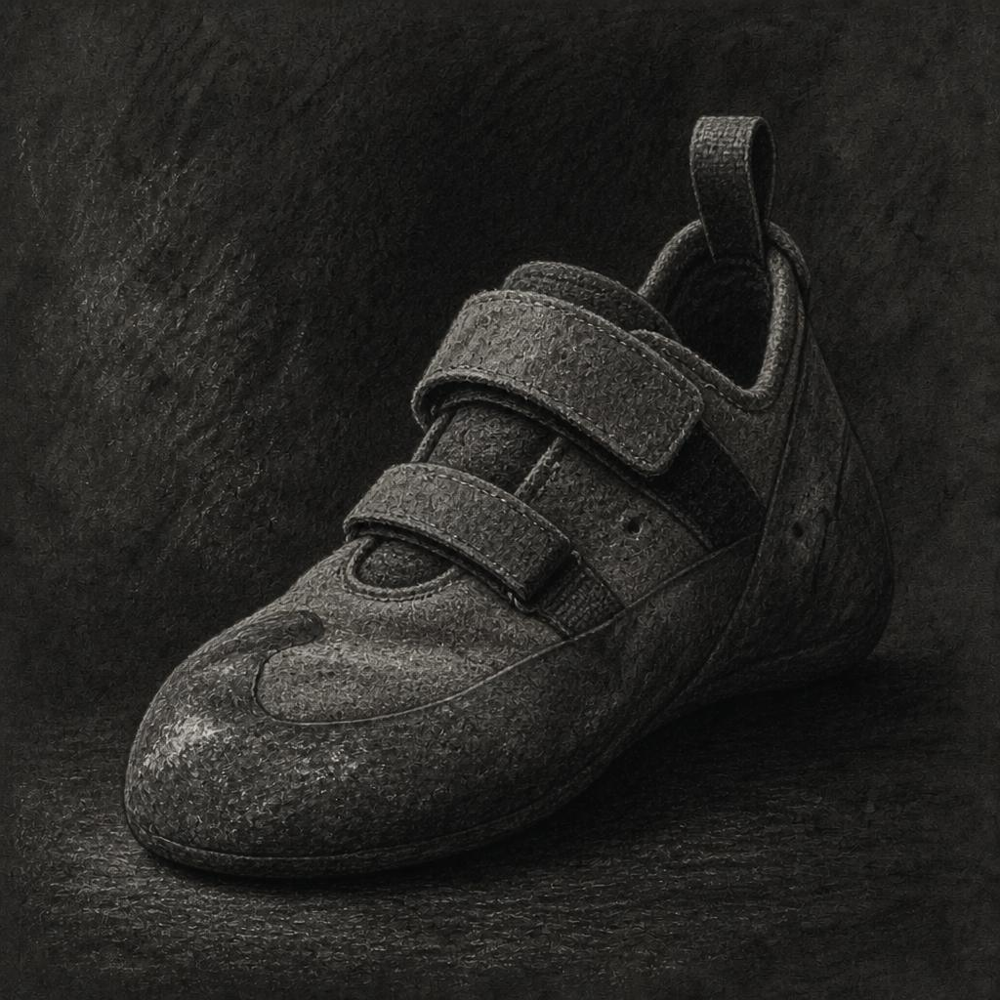
Mnich jest dla mnie dobrym obrazem tego momentu, kiedy przestajesz myśleć o każdym ruchu osobno.
Wyobraź sobie, że się wspinasz. Prowadzisz. Masz przed sobą kolejną wpinkę. Czasami, żeby do niej sięgnąć, musisz zrobić ruch, którego jeszcze nie jesteś do końca pewien. Czujesz nawet pewien dyskomfort z tym związany. Wiesz, że musisz przenieść ciężar ciała. Puścić jedną rękę. Zaufać nogom. Zaryzykować trochę więcej niż przed chwilą. I nagle decydujesz się wykonać ten jeden ruch, który zadecyduje, czy utrzymasz się w ścianie…
Na początku ktoś mówi Ci, co zrobić. Potem próbujesz to wykonać. Nie wychodzi. Próbujesz jeszcze raz. Nie wychodzi. Jeszcze raz. I jeszcze raz. Do momentu, aż któregoś dnia Twoje ciało zaczyna rozumieć. Zaczynasz wiedzieć, co zrobić, zanim zdążysz to nazwać.
To nie jest już teoria.
To jest pamięć mięśniowa.
Michael Polanyi napisał kiedyś, że wiemy więcej, niż potrafimy powiedzieć.
Doświadczony wspinacz wie, pod jakim kątem ustawić ciało, żeby odciążyć przedramiona. To opiera się na prawach fizyki, ale nikt nie wykonuje w głowie obliczeń. Nie da się też precyzyjnie wyjaśnić słowami, jak mocno docisnąć but na wyślizganej ścianie albo jak ułożyć dłoń na obłym chwycie.
Nie każdy patent da się zwerbalizować.
Z projektowaniem bywa podobnie. Patrzysz na produkt kilka sekund i wiesz, jak jest zbudowany. Wiesz też, że coś jest nie tak — choć uzasadnienie przychodzi dopiero po chwili. Albo wcale.
Kurs tego nie da. Kurs daje mapę, i to jest sporo. Ale odruch trzeba sobie wypracować samemu.
Setki przepracowanych godzin. Powtórzenia. Błędy. Nieudane próby. Przy okazji obdarcia. Kolejne próby. Naciągnięcia. Zakwasy. Czasami może pojawić się krew. I jeszcze jedna próba. I kolejna.
Ale tak właśnie stajemy się praktykami.
To dlatego dwanaście lat później rozpoznawałem na Orlej Perci miejsca, o których dawno przestałem pamiętać. Ciało pamiętało za mnie.
Dlatego kiedy ktoś pyta mnie, jak zacząć w designie, nie zaczynam od teorii. Zaczynam od budowania.
Weź rozwiązanie, które Ci się podoba. Spróbuj zrozumieć, jak działa. Dlaczego jest dobre? Jak zostało zbudowane? Co sprawia, że właśnie ten element działa tak, a nie inaczej?
A potem spróbuj je odtworzyć. Nawet jeden do jednego.
Nie po to, żeby je skopiować. Po to, żeby zobaczyć, czego wcześniej nie widziałeś.
Bo kiedy zaczynasz naprawdę budować, zaczynasz też naprawdę pytać. A kiedy zaczynasz pytać, zaczynasz rozumieć. I wtedy teoria przestaje być zbiorem definicji. Zaczyna odpowiadać na pytania, które sam już masz.
Z czasem pojawia się coś, co można nazwać intuicją. Ale intuicja nie bierze się znikąd. Za intuicją najczęściej stoją setki wcześniejszych prób, błędów i obserwacji.
Często chcemy za szybko osiągnąć jakiś etap. Często nawet nie jesteśmy świadomi, że jeszcze nie jesteśmy gotowi. Głowa nie jest wystarczająco spokojna. Ciało nie jest jeszcze gotowe. I dlatego odpadamy od ściany. Czasami zatrzymamy się na naszej asekuracji. A czasami ten upadek bywa naprawdę bolesny.
W ścianie ta informacja przychodzi natychmiast. Zrobiłeś zły ruch — odpadasz. Nie ma dyskusji. Nie ma prezentacji. Nie ma roadmapy. Nie ma KPI. Odpadasz.
W projektowaniu rzadko dostajesz taką odpowiedź. Wdrażasz, idziesz dalej, a produkt zmienia się z dziesięciu innych powodów. Można przepracować w tym zawodzie wiele lat i nigdy się nie dowiedzieć, które ruchy były dobre.
A niektóre były po prostu szczęśliwe. Tylko że tego też się nie dowiesz.
Odpadałem kilka razy. Najboleśniej wtedy, kiedy chciałem zmienić wszystko za jednym podejściem. Pół roku projektowania nowych mechanik i eleganckich rozwiązań dla znanej marki e-commerce. Zamiast iteracyjnie — wszystko naraz. Co mogło pójść nie tak?
Bolało.
To, co osiągnąłem, było dobre. Do dziś tak uważam. Tylko że skończyły się środki, zanim skończyła się droga.
Doświadczenie nie polega na tym, że wiesz wszystko. Polega na tym, że szybciej rozpoznajesz, czego jeszcze nie wiesz.
koniec rozdziału 4 z 11 · do końca ok. 29 min
Marmolada
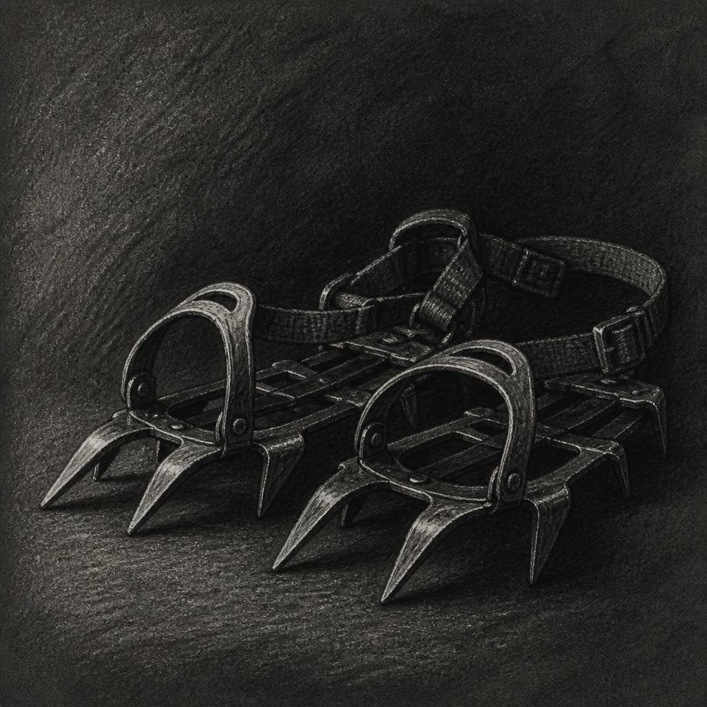
Mieszkam na dziesiątym piętrze. Winda działa. Jeżdżę nią codziennie i nie mam z tym problemu.
Mimo wszystko staram się regularnie wchodzić po schodach. Nie dlatego, że tak trzeba. Dlatego, że po roku jeżdżenia windą przestaje się wiedzieć, ile to właściwie jest — dziesiąte piętro.
A Ty? Próbowałeś kiedyś wejść na swoje?
Marmolada nie jest jednym szczytem. To cały masyw, najwyższy w Dolomitach, z lodowcem i kilkoma wierzchołkami. Najwyższy z nich to Punta Penia — 3343 metry.
Można ją zdobyć, wjeżdżając na Punta Rocca. Trzy odcinki kolejki i jesteś na górze. Piękna sprawa. Oszczędzasz czas. Oszczędzasz siły. Stajesz na tarasie, robisz zdjęcie panoramy. Cyk. Kadr się zgadza.
Problem w tym, że Punta Rocca ma 3265 metrów. Do najwyższego punktu jest stamtąd siedemdziesiąt osiem metrów w pionie. I cała reszta drogi, na którą trzeba mieć sprzęt i umiejętności.
Z tarasu widać go doskonale.
Można też wejść żelazną drogą — Cresta Ovest, ferratą wiodącą zachodnią granią. W teorii trudności techniczne nie cięższe niż na Orlej Perci. W praktyce różnie bywa. Spora ekspozycja. Czasem oblodzenia i pogoda, która zmienia wszystko. Prawie 1300 metrów przewyższenia. Narastające zmęczenie. Mijają godziny, a góra wciąż daje o sobie znać. W końcu stajesz na wierzchołku z zupełnie innym bagażem.
Mijałem po drodze różnych ludzi. Najbardziej zapamiętałem parę, która szła na lotnej asekuracji, w pełnym alpejskim szpeju. Sprzętu mieli więcej, niż wymagała droga. Umiejętności — mniej, niż wymagał sprzęt. Przez brak pewności i nadmiar rzeczy do ogarnięcia zatrzymywali się w miejscach, w których nie powinno się stać. Wstrzymywali ruch. Dokładali zmiennych. Cudzych zmiennych, które musiałem uwzględniać.
Jest jeszcze droga klasyczna przez lodowiec, z rakami, czekanem i liną. I jest południowa ściana — ponad sto ekstremalnych dróg wspinaczkowych, o których większość ludzi na tarasie nigdy nie usłyszy.
Jest za to jeden wspólny mianownik. Wszyscy powiedzą potem to samo: byłem na Marmoladzie.
Każda z tych dróg prowadzi na szczyt. Ale nie uczą tego samego.
I nie chodzi o to, żeby nie korzystać z kolejki. Korzystam. Czasem to najrozsądniejsza decyzja, jaką można podjąć.
Chodzi o różnicę między tym, że wjechałeś, a tym, że myślisz, że wszedłeś.
Tę drogę na skróty widać dzisiaj jak na dłoni. W dobie, w której stworzenie produktu to zaledwie jedno zdanie.
Klik. Kolejna aplikacja.
Klik. Kolejny wtórny design.
Klik. Research bez pokrycia.
I na każdym etapie — cyk — foteczka ze szczytu.
Zalaliśmy internet falą sztampy. Wtórnych rozwiązań jest dziś tyle, co turystów w sierpniu nad Morskim Okiem. Mało kto weryfikuje, czy te generacje w ogóle mają sens. Mało kto już cokolwiek weryfikuje. Byleby tylko szybko wejść na szczyt i zrobić foteczkę.
Powoływanie się na artefakty produktu, które powstały na skutek pomyłki modelu. WTF.
Halucynacje w opisie ticketu, który masz wykonać. Czytasz i masz w głowie jedno wielkie WTF.
Wygenerowana makieta do zakodowania, która nie ma sensu pod względem logiki ani użyteczności. WTF.
Vibe kodowanie tej makiety i zdziwienie, że ktoś ma pretensje na code review. WTF.
A najśmieszniejsze jest to, że zespół wie. Tylko na tym etapie nie ma już jak zawrócić.
„Poprawimy w następnym sprincie”.
To się naprawdę dzieje. To właśnie skutek dążenia na skróty. Bezrefleksyjnego klikania.
Patrzę na te rzeczy i widzę Czupel w listopadzie. Błoto po kostki. Mokre kamienie. Drzewa bez liści. Mgła, przez którą nic nie widać dalej niż na dziesięć metrów.
Tak właśnie wygląda sztampa. Cyk.
Nie mam problemu z tym, że narzędzia są coraz lepsze. Sam coraz częściej projektuję za pomocą słów i promptów. Współpracuję z AI. Mówię, co chcę osiągnąć. Iteruję. Sprawdzam. Zmieniam.
Traktuję to jak kolejną przygodę. To po prostu nowe narzędzie. Nowy teren do poznania. Nowe mapy. Nowe spojrzenie na górę.
Sztuczna inteligencja nie zabiera nam góry. Odciąża nas z części sprzętu, którym do tej pory się po niej poruszaliśmy.
Tylko że sprzęt, którego nie nosisz, przestaje Cię obciążać. A mięsień, który nie jest obciążany, słabnie. Zanika. Przestaje pracować.
Dlatego to narzędzie działa tylko w jedną stronę. Trzeba wiedzieć, co się chce zrobić. Dokąd się zmierza. I na każdym kroku weryfikować, czy kierunek jest właściwy.
Coraz częściej jesteśmy rozliczani z dowiezienia. Nie ze zrozumienia. A skoro i tak rzadko się dowiadujemy, które decyzje były dobre, to różnica między zrozumieniem a wygenerowaniem staje się w praktyce niewidoczna.
Wysiłek był kiedyś filtrem. Musiałeś przemyśleć coś kilka razy, żeby dojść do sedna problemu. Żeby w ogóle zacząć pracę. Teraz to coś zamieniło się w skopiowanie zawartości całego zadania do odpowiedniego okienka. Kilka sekund. Kilka ruchów palców. Klik. Klik.
I to jest paradoks pamięci mięśniowej. Robisz to automatycznie, a mięśnie i tak zanikają.
Przynajmniej przez jakiś czas.
Bo lata schodzą na naprawianiu produktu po dziesiątkach złych decyzji, które zdążyły zrosnąć się z jego fundamentem. A potem to, co wreszcie zaczęło działać, psujemy od nowa. Tym razem szybciej.
Klik. Klik. Klik.
I wracamy tam, skąd wyszliśmy. Tylko z ładniejszymi ekranami.
Piszemy przy tym coraz więcej. Dokumentacja, standardy, zapisy ustaleń. Transkrypcje całych spotkań. Tylko że czyta to już nie człowiek, a model — i to on wyciąga z tego wnioski, których nikt nie sprawdził.
AI w rękach specjalisty naprawdę jest potężnym narzędziem. Tylko że narzędzie nie zna kontekstu Twojego produktu. Zna wzorzec. Często nawet nie wiesz, skąd ten wzorzec trafił do jego pamięci.
To trochę jak raki. Pozwalają wejść tam, gdzie bez nich byś nie poszedł. Ale w rękach kogoś, kto nie umie ich używać, nie zwiększają bezpieczeństwa. Czasem wręcz przeciwnie. W wariancie optymistycznym zrobisz sobie dziurę w spodniach. Rzeczywistość bywa bardziej bolesna.
W projektowaniu możemy dziś bardzo szybko wygenerować rozwiązanie. Zamiast budować coś od zera, wykorzystujemy design system. Sprawdzone patterny. Gotowe frameworki. Narzędzia pozwalają przeskoczyć etapy, które kiedyś zajmowały dni albo tygodnie. I bardzo dobrze. Po to powstały.
Tylko że stworzenie rozwiązania często jest łatwiejsze niż zrozumienie problemu. Jeszcze trudniej jest rozłożyć go na części. Jak zabawkę. I zobaczyć zależności. Albo zadać właściwe pytanie.
A najtrudniej zauważyć, że to pierwsze pytanie, od którego zaczęliśmy, było błędne.
A co, jeżeli od początku iterujemy zły problem? I w ogóle nie mamy o tym pojęcia?
Może to kwestia charakteru. Może lubisz w kółko reprodukować te same rozwiązania w ten sam sposób. W kółko i w kółko. Może czujesz się dzięki temu bezpieczniej. Skryty jak świstak. Schowany za sprawdzonym rozwiązaniem w swojej norce.
Ale czy zauważyłeś, że od kiedy to jest łatwe, robisz w kółko to samo?
Zadaj sobie jedno pytanie: czy potrafiłbyś zbudować coś od zera?
Postawić krok na nieznanym terenie.
Wymyślić świeży koncept.
Przeprowadzić analizę i samodzielnie się pod nią podpisać.
Pokonać drogę na szczyt samemu?
Narzędzi można nauczyć się szybko. Myślenia już niekoniecznie.
Jestem ciekaw, co zostanie z projektanta, który definiował siebie wyłącznie przez jedno narzędzie. Jeden wygodny sposób poruszania się. Po znanej ścieżce.
Co się stanie, kiedy zmieni się teren? Kiedy sprawdzony sposób zawiedzie? Kiedy narzędzie przestanie być Twoją przewagą?
Kiedyś poprosiłem projektanta, żeby na chwilę porzucił swój dobrze znany stack i spróbował rozwiązać podobny problem w zupełnie innym środowisku. Padło na vibe coding.
Nie chodziło o to, że nie znał narzędzia. Chodziło o to, że kiedy zniknął bezpieczny interfejs i gotowe klocki, zniknęły też jego myśli. Nie potrafił opisać, co właściwie chce zbudować — bo do tej pory robił to za niego design system, gotowe ekrany albo koledzy z zespołu.
Wynik?
Zamiast zwinnej kozicy górskiej dostaliśmy niezgrabnego, chaotycznego pingwina.
Uwielbiam pingwiny. Tylko nie jestem pewien, czy chciałbym z którymś iść na Grossglocknera.
Kiedyś mówiło się: pokaż mi swój kod, a powiem Ci, jak myślisz.
Dziś wystarczy prompt.
koniec rozdziału 5 z 11 · do końca ok. 24 min
Everest
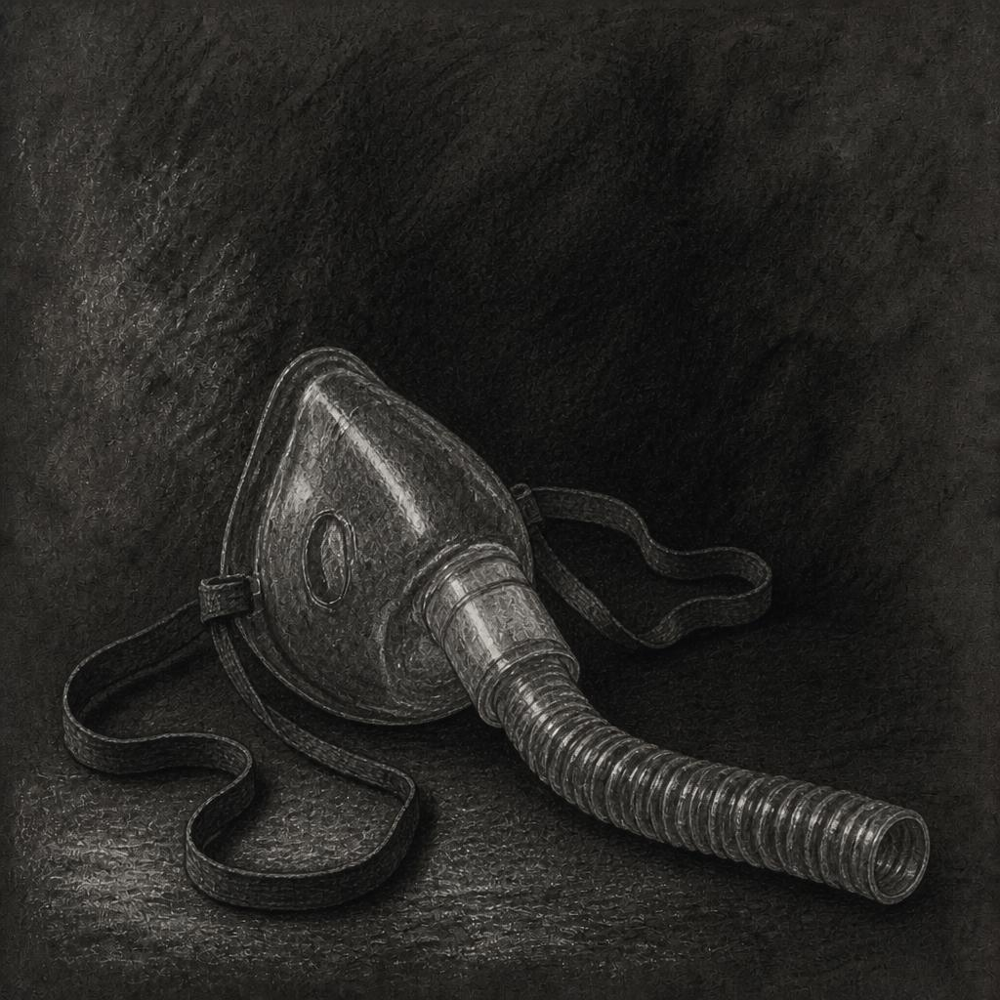
Nigdy nie byłem na Evereście. Nigdy nawet nie byłem wyżej niż pięć tysięcy metrów. Ale mam w głowie pewien obraz tej góry.
I szczerze? Nie wiem, czy chciałbym tam pojechać. Bo jaka to frajda poznawać majestatyczną górę, stojąc na niej w kolejce jak po mięso w osiedlowym sklepie? Zimą.
Tylko że ta kolejka jest tam z konkretnego powodu.
Za odpowiednie pieniądze można dziś kupić wersję skróconą. Klasyczna wyprawa trwa około sześciu tygodni. Przyspieszona — trzy, i kosztuje o jakieś trzydzieści tysięcy euro więcej. Najdroższy pakiet to prywatny przewodnik, własna obsługa i dwieście tysięcy euro.
Aklimatyzację odbywasz wcześniej. W namiocie hipoksyjnym. We własnym mieszkaniu. Osiem tygodni.
Operator uczciwie przyznaje, że łącznie spędzasz na wysokości więcej czasu niż przy klasycznej wyprawie. Tylko że większość z tego w sypialni.2
Nie kupujesz więc czasu. Kupujesz to, żeby nie musieć go spędzić na górze.
I bardzo często to działa. Ludzie wracają cało, z tym jednym zdjęciem. Cyk. I opowieścią na całe życie.
W środowisku górskim to gorący temat. Nie będę go komentował.
Problem zaczyna się wtedy, kiedy zmienia się pogoda. Bo wtedy zostaje tylko to, czego nie da się kupić.
Podobne wyprawy organizujemy dziś w firmach.
Ogłaszamy strategię AI-first. Tniemy dwadzieścia procent zespołu. Przebudowujemy roadmapę pod technologię, o której jest jeszcze za wcześnie, by mieć pewne zdanie.
Nie twierdzę, że wiem lepiej. Nie znam ich liczb.
Niepokoi mnie co innego: oni też ich nie znają.
Nikt nie wdroży AI w kwartał. Model trzeba osadzić w procesie. Ludzi przeszkolić. A potem przez pół roku poprawiać to, co wychodzi.
Jeśli ktoś zwalnia po kwartale, to nie wdrożył AI.
Zwolnił ludzi i nazwał to strategią.
I nie jest to decyzja głupia. Dla człowieka, który ją podejmuje, jest racjonalna. Działa od razu. Koszt przychodzi za dwa lata — i często dostaje nim rykoszetem ktoś inny.
Trudno oczekiwać, że ktoś wybierze wolniejszą drogę, skoro rozliczamy go z tego, jak szybko dowozi. Zwolniliśmy część zespołu, ale hej, mamy AI. Powinniśmy dowozić jeszcze szybciej.
Zwalniamy kogoś. Trudna decyzja, wszyscy to rozumiemy.
A potem piszemy o tym post. Że po roku ta osoba podziękowała. Że znalazła coś lepszego. Że czasem to, co wygląda na porażkę, jest początkiem czegoś nowego.
Dostajemy komentarze. Ktoś dopisuje metaforę. Ktoś inny nazywa to procesem dojrzewania.
Tylko że ta osoba nie odeszła sama. A jej podziękowanie to kurtuazja. Nikt nie mówi w twarz, co naprawdę myśli o miejscu, z którego go wyproszono.
Może po prostu trafiła gdzieś, gdzie jest mniej patologicznie.
Nie napisałbym takiego posta. Ale rozumiem, skąd się bierze — łatwiej żyć z trudną decyzją, kiedy ma dobre zakończenie.
To nadal nie jest nasza historia.
A skoro strategia została ogłoszona, trzeba pokazać, że to się dzieje.
Polityka użycia AI.
Standardy promptowania.
Wytyczne dla zespołów.
Matryca odpowiedzialności.
Rejestr przypadków użycia.
Karta oceny ryzyka.
Ktoś to wszystko napisał. W godzinach pracy. Ktoś inny mu to zlecił.
Sprawdzam. Niczym w pokerze. Wchodzę na Confluence i klikam.
Nikt tego nie czyta.
Ktoś spędził tydzień, żeby wyprodukować coś, na czyje przeczytanie zespół straciłby rok. To trochę jak badania pod tezę. Albo malowanie trawy na zielono.
Tylko że ta sama osoba jeszcze pół roku temu robiła coś innego. Dowoziła płatne projekty.
Więc jeśli ktoś przesuwa ludzi z pracy, za którą klient płaci, do pisania dokumentów o tym, jak pracujemy z AI — to nie jest transformacja.
To jest zamiana produkcji na sprawozdanie z produkcji.
I tu jest paradoks, który zastanawia mnie najbardziej.
Decyzja, która ma być dowodem wizjonerstwa, bywa dokładnie odwrotnością wizji. Jest ucieczką od trudniejszej roboty — od zrozumienia, dlaczego produkt tak naprawdę nie zarabia. Od rozmowy o procesach, których nikt nie ogarnia. O długu, który narastał latami.
Może problem od początku leżał gdzie indziej? Może obiecaliśmy klientom za dużo. Może zaufaliśmy komuś, kto prowadził nas złą drogą.
AI brzmi nowocześnie. Tłumaczy reorganizację. Pozwala uniknąć rozmowy o tym, co naprawdę nie działało.
To jest kolejka na poziomie strategii. Wjeżdżasz szybko, robisz zdjęcie, mówisz, że byłeś na szczycie. Cyk.
Tylko że firma została na tarasie widokowym.
Jest jeszcze jedna rzecz, o której mówi się najmniej.
Praca, którą dziś generuje się promptem, była kiedyś motorem napędowym nauki. Nudna. Powtarzalna. Wykonawcza. Dokładnie ta, na której ludzie budowali swoją pamięć mięśniową.
To trudny temat i nic nie jest tu zerojedynkowe. Ciężko wskazać palcem, gdzie dokładnie leży błąd i kto go popełnił. Każda firma z osobna postępuje racjonalnie, kiedy tnie juniorów, bo model zrobi to taniej. Suma tych racjonalnych decyzji to branża bez ludzi, którzy za dziesięć lat mieliby doświadczenie.
A może się mylę? Może junior z odpowiednim modelem wchodzi dziś wyżej i szybciej, niż wchodził ktokolwiek przed nim. Może to nie jest udawanie. Tlen naprawdę działa.
Tylko że nikt nie wie, na jakiej wysokości ten człowiek potrafi jeszcze samodzielnie oddychać.
A co, jeśli zabraknie tlenu?
Schody nie znikają. Znika umiejętność wchodzenia po nich.
W Beskidzie Żywieckim jest góra, która nazywa się Oszust. Nazwa nie wzięła się z przypadku. Od strony Sobolówki podejście wygląda na krótkie. Jest jednak bardziej strome i o wiele dłuższe, niż się na pierwszy rzut oka wydaje.
Może każdy z nas ma teraz swojego Oszusta.
Ja też nie wiem, w którym miejscu tego podejścia jestem.
koniec rozdziału 6 z 11 · do końca ok. 21 min
Babia Góra
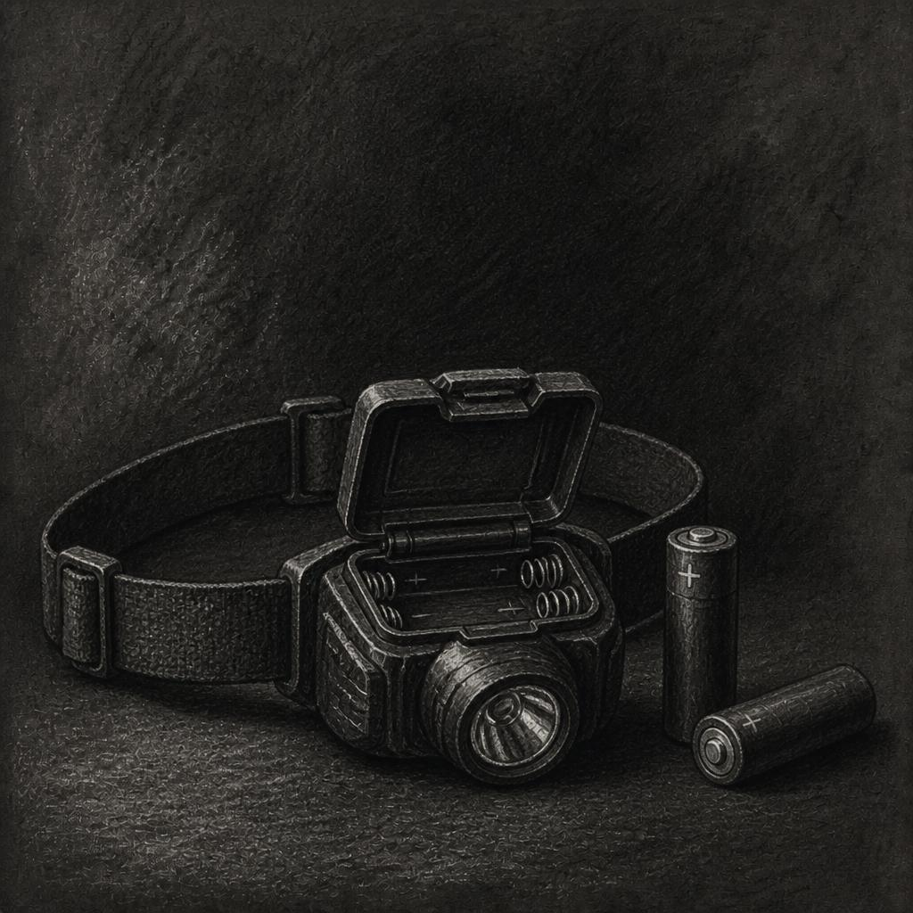
Latem wejście na Babią należy do tych mniej wymagających. Szeroki szlak, sporo ludzi, kopiec na szczycie widać z daleka.
Bywałem tam też zimą. Jednej nocy nie zapomnę.
Zamieć. Zerowa widoczność. Ślady, które zostawiałeś, znikały w błyskawicznym tempie. Zimno takie, że zmiana baterii w czołówce zaczyna boleć — czynność, która latem trwa pięć sekund i nic nie kosztuje. Takie sceny widziałem wcześniej tylko w filmach o ekstremalnie wysokich górach. A to był najwyższy szczyt Beskidów.
Było nas czterech albo pięciu, dokładnie już nie pamiętam. Ekipa, z którą wychodziłem w góry wiele razy. Mieliśmy sporo górskich aktywności w CV. Ale wtedy pierwszy raz zobaczyłem, że są autentycznie wystraszeni. Sam zresztą też miałem swoje obawy.
Gdyby ktoś wcześniej powiedział mi, że bał się w Beskidach, pewnie potraktowałbym to z przymrużeniem oka.
Nie mogliśmy znaleźć szczytu. Babia Góra ma ogromny, charakterystyczny kopiec — nie da się go przeoczyć. Tamtej nocy staliśmy kilkadziesiąt metrów od niego i go nie widzieliśmy.
Żadnych śladów. Żadnych oznaczeń. Żadnego życia. Zresztą prawie nic nie widzieliśmy poza nieustannie szczypiącą nas bielą.
A od tego kopca zaczynała się droga do schroniska na Markowych Szczawinach.
Chaos i dziesiątki nieoczywistych decyzji. Weszliśmy dzięki GPS-owi. Kiedy mieliśmy już punkt odniesienia, zejście okazało się prostsze.
Ten sam szlak. Ta sama góra. Zupełnie inne doświadczenie.
Kroki, które latem stawiasz bez namysłu, zimą mają strategiczne znaczenie. A kiedy robisz coś ciągle w ten sam sposób, przestajesz patrzeć pod nogi. Tracisz czujność. Przy zmiennych warunkach nietrudno wtedy o bolesne potknięcie.
Dlatego doświadczenie może być mapą. Ale może też stać się klatką.
Czasami patrzę na ludzi z ogromnym stażem. Wielkie marki. Bogate portfolio. Dwadzieścia lat w branży. To naprawdę dużo.
Ale dwadzieścia lat doświadczenia nie zawsze oznacza dwadzieścia lat uczenia się.
Czasami to po prostu jeden rok doświadczenia powtórzony dwadzieścia razy.
Niektórzy zdobyli swój szczyt tak dawno temu, że zdążyli zbudować na nim dom.
I siedzą w nim do dzisiaj.
Ukryci za szczelnymi oknami utartych procesów. Z wygodnego fotela. Przy swoim pięknym kominku. Tłumaczą wszystkim dookoła, jak wygląda prawdziwa góra. Znają jeden szlak. Ten, którym weszli dwadzieścia lat temu.
Tylko że góra za oknem zdążyła się zmienić.
Długo myślałem, że to kwestia wygody. Że po prostu bezpieczniej i łatwiej powtarzać to, co się zna. Dziś myślę, że nie jest to takie oczywiste.
Może tu nie chodzi o czas. Im dłużej jesteś kimś, kto wie, tym drożej kosztuje przyznanie, że przestałeś wiedzieć.
Bo przyznając się do błędu albo niewiedzy, rozmontowujemy kawałek własnego obrazu. Tworzymy nieidealny portret.
Człowiek z dwudziestoletnim stażem coraz rzadziej broni metody. Coraz częściej staje w defensywie za swoją historią, w której ta metoda działała.
Nie każdy dom jest wyborem. Część ludzi została tam, gdzie jest, bo nie mieli dokąd pójść. Branża potrafi być bezlitosna dla tych, którzy przekroczyli pewien wiek. Nie lubię o tym myśleć, ale widzę to za każdym razem, kiedy ktoś znajomy szuka pracy.
Znam też osoby, które całą karierę poświęciły jednej firmie. I raczej na podobnym stanowisku. To trochę tak, jakby w schronisku zawsze zamawiać to samo danie. Może być naprawdę dobre. Tylko nigdy się nie dowiesz, czy gdzieś obok nie stało lepsze.
Zastanawiam się też, ile ja desek wniosłem na swój własny szczyt.
Mam nadzieję, że niewiele.
Inni odchodzą. I rzadko z powodu, o którym się mówi. Nie dlatego, że produkt jest słaby. Odchodzą przez pieniądze. Przez monotonię. Przez to, że nikt nie zauważył, kiedy zrobili coś dobrze. Czasem jedynym spoiwem, które ich jeszcze trzyma, jest zespół.
Bo dom buduje się wtedy, kiedy przestaje się pytać.
Dziecko nie zna heurystyk. Nie ma pięknego portfolio. Nie słyszało o design thinking, personach i podwójnym diamencie. Nie zna frameworków i nie potrzebuje korpomowy. Po prostu pyta „dlaczego?” tak długo, aż zacznie rozumieć.
Nie boi się popełnić błędu. Bo błąd to część drogi, którą trzeba przebyć. Czasami to rysa na ciele, która przypomina o cennej lekcji.
I dlatego jego obraz świata jest zawsze aktualny.
Twój był aktualny wtedy, kiedy ostatnio sprawdzałeś.
Więc kiedy ostatnio zmieniłeś zdanie w czymś zawodowym? Nie „czego się nauczyłeś” — na to każdy ma gotową odpowiedź. Co uważałeś za pewne trzy lata temu, a dziś uważasz inaczej?
Jeśli nic — możliwe, że masz jeden rok doświadczenia. Powtórzony.
koniec rozdziału 7 z 11 · do końca ok. 18 min
Rysy
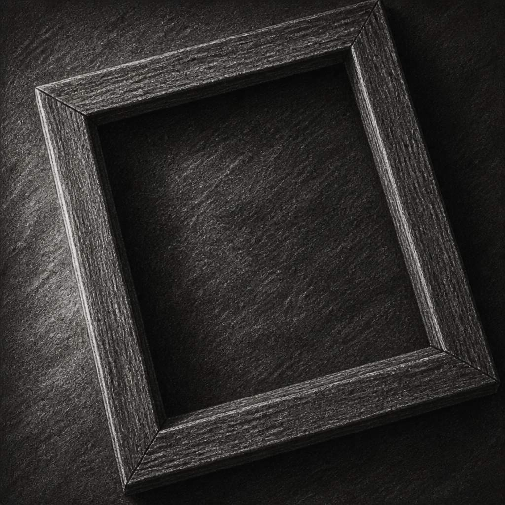
Latem 2026 roku TOPR ratował w polskich Tatrach 541 osób.
Dwieście dwadzieścia cztery potknięcia i upadki. Sto siedemdziesiąt jeden nagłych zachorowań. Trzydzieści trzy przypadki opisane w statystyce jako brak umiejętności. Siedemnaście upadków z wysokości. Piętnaście — nieodpowiednie wyposażenie. Dwanaście zabłądzeń. Siedem śmierci.3
Brak umiejętności ma w tych zestawieniach własną rubrykę.
Rysy to najczęściej fotografowany polski szczyt. Chciałoby się rzec — polski Everest. Zagraniczni przewodnicy, z którymi miałem okazję rozmawiać, byli wręcz zdziwieni tym fenomenem. Być może wynika to z tego, że mamy dość ograniczone górskie zasoby.
W maju w dolinie jest wiosna. Powyżej Czarnego Stawu wciąż leży śnieg. To nadal zimowy teren.
Chciałbym napisać, że z dołu tego nie widać. Ale to nieprawda. U podstaw działa polskie tatrzańskie metro. Turysta za turystą, od Palenicy w stronę Morskiego Oka. A potem dalej.
Widać więc tłum. I tłum staje się dowodem. Skoro idą wszyscy, to znaczy, że można. A skoro można, to dam radę i ja.
Czasami przeglądam górskie grupy. Na zdjęciach wszystko wygląda tak samo. Ten sam szczyt, to samo światło, ta sama panorama. Cyk.
A czasami patrzę na kolejny kadr i nie wiem, o co chodzi. Szczytu prawie nie widać, bo przysłania go pozująca postać. Sesja zdjęciowa, która przypadkiem odbywa się na dwóch i pół tysiącach metrów.
Kto to właściwie jest? Wspinacz? Turysta? Ktoś, kogo ktoś inny tam wyprowadził?
Nie wiem. I szczerze — po zdjęciu nigdy tego nie widać.
A kiedy wszystkie kadry wyglądają tak samo, przestajemy dostrzegać nie tylko kompetencję. Ale i człowieka.
Bo zdjęcie nie przenosi kompetencji. Przenosi obraz.
Pozowanie w uprzęży tam, gdzie nie jest do niczego potrzebna. Selfie z mądrej konferencji. „Strategia produktowa” wpisana tam, gdzie był jeden warsztat.
To rekwizyty. Dowodzą przynależności, nie umiejętności.
Discovery. Framework. Mindset. Strategia. Leadership. Cyk.
I tu jest rzecz, o której mówi się najmniej: to nie jest niczyja wada charakteru.
Nagradzamy to, co widać.
Trzy lata utrzymywania produktu to czasami zero slajdów. Miesiąc redesignu to dziesięć. Rozmontowanie czyjejś złej decyzji sprzed roku nie ma ładnego „before / after”. Bywa i tak, że uratowanie projektu przed katastrofą wygląda w portfolio dokładnie tak samo jak brak projektu.
Więc jeśli chcesz, żeby ktoś zobaczył Twoją pracę, musisz wybrać taką, którą da się pokazać.
I to nie jest niczyja wina. To po prostu to, za co się płaci.
Jest jeszcze druga strona tej samej monety.
Efektowne portfolio wymaga projektów, które wolno pokazać. A najtrudniejsze rzeczy w tej branży dzieją się za NDA. W systemach wewnętrznych, których nikt nigdy nie zobaczy. Paradoks polega na tym, że możesz mieć ogromny staż i wiedzę, a jednocześnie najmniej do pokazania.
Czasami najbardziej porysowanego sprzętu po prostu nie wyjmujesz ze swojego plecaka.
Pamiętam jedną konferencję. Dużą, znaną w całej Polsce. Siedziałem na sali i w pewnym momencie jako jedyny parsknąłem śmiechem.
Wiem. Mało kulturalne.
Nie wytrzymałem.
Pomyślałem wtedy, że to trochę tak, jakby ktoś stanął przed pełną salą i wytłumaczył, jak zdobyć wysoką górę w gumiakach.
Krok pierwszy: zdefiniuj swój szczyt.
Krok drugi: zbuduj mindset zdobywcy.
Krok trzeci: zaufaj procesowi.
Krok czwarty: iteruj podejście.
Krok piąty: świętuj sukces.
A cała sala notuje.
Nikt nie pyta, jaka to góra. Jaka jest pogoda. Czy te gumiaki mają jakąkolwiek przyczepność. Czy człowiek, który o tym opowiada, wyszedł w nich kiedykolwiek poza teren parkingu.
Wszyscy kiwają głowami. I zapisują te kroki. Jakby to był magiczny przepis na sukces.
Ale sala nie jest głupia. Sala przyszła po konkretne instrukcje. Po coś namacalnego. Po coś, co da się wdrożyć w poniedziałek. Albo opowiedzieć na pierwszym daily.
Bo pięć kroków łatwo zapisać w notatniku.
Niepewności nie da się.
Mamy niezwykłą zdolność ubierania zwykłych rzeczy w specjalne słowa. Czasami tak skutecznie, że banalna obserwacja zaczyna wyglądać jak odkrycie.
Potem odkrycie dostaje nazwę.
Nazwa dostaje framework.
Framework dostaje slajdy.
Slajdy dostają scenę.
Scena dostaje bilet.
I nagle coś, co było prostym spostrzeżeniem, zaczyna tworzyć całą duchowość, którą można sprzedać w formie kursu, warsztatu albo książki.
Problem zaczyna się wtedy, kiedy ładna opowieść zaczyna udawać rzeczywistość.
Sam też nie jestem od tego wolny.
Zdarzyło mi się przedstawiać proces mądrzejszym, niż był naprawdę. Na spotkaniu z biznesem. Na rozmowie rekrutacyjnej. Decyzja podjęta na przeczucie stawała się w opowieści wnioskiem z analizy. Trzy nieudane próby znikały — została ta czwarta, która zadziałała.
I powiem szczerze: czasem tak trzeba. Projektowanie to także sprzedawanie i negocjowanie. Rozwiązanie, którego nie umiesz obronić, nie zostanie wdrożone. Nawet jeśli jest dobre.
Granica jest w tym, komu to opowiadasz.
Stakeholderowi sprzedajesz rozwiązanie. Sobie nie musisz.
Robi się niebezpiecznie dopiero wtedy, kiedy sam zaczynasz wierzyć w wersję ze slajdu. Kiedy sam zaczynasz pamiętać drogę bez potknięć.
Zaczynamy projektować nie tylko produkty. Zaczynamy projektować dowody na to, że jesteśmy dobrymi projektantami.
Czy to przypadek, że tak wiele case studies wygląda identycznie?
Problem → Research → Framework → Warsztat → Insight → Piękny interfejs → Wynik → Sukces.
Jakby wszystkie te historie powstawały na jednym kursie.
Bywa i tak, że mając gotowe rozwiązanie, ktoś wstecznie doprojektowuje do niego całe discovery. Tylko po to, żeby udowodnić, że jest „pełnowymiarowym” projektantem.
A przecież rzeczywistość rzadko jest tak elegancka. Czasami decyzja była przypadkowa. Czasami się pomyliliśmy. Czasami broniliśmy rozwiązania, które nie było dobre, bo zdążyliśmy się do niego przywiązać — a ciężko przyznać się do błędu, kiedy ma się ego. Czasami coś zadziałało przez czysty przypadek. A czasami dobry wynik był efektem dziesięciu złych prób, których nikt później nie pokazuje.
Nie wszystkie decyzje mają mądre uzasadnienie.
Nie każda próba prowadzi do celu.
Nie każdy dzień kończy się sukcesem.
Może warto czasami pokazać również błoto? Może warto przypomnieć sobie, jak wygląda Czupel przy gorszej pogodzie?
Może właśnie tam te gumiaki byłyby idealne.
Góra nie wie, jak dobrze wygląda na Instagramie. Produkt też nie.
Ten tekst zresztą też jest obrazem. Pisząc go, buduję coś o sobie. I wiesz co? Nadal nie wiem, czy robię to dobrze.
Coraz więcej rzeczy robimy tak, żeby dało się potem pokazać, że się je robiło.
Byłem na Rysach. W sezonie rzeczywiście bywa tłoczno na szczycie. Ostatniej zimy też się tam wybierałem.
Nie doszedłem.
koniec rozdziału 8 z 11 · do końca ok. 14 min
Gran Paradiso
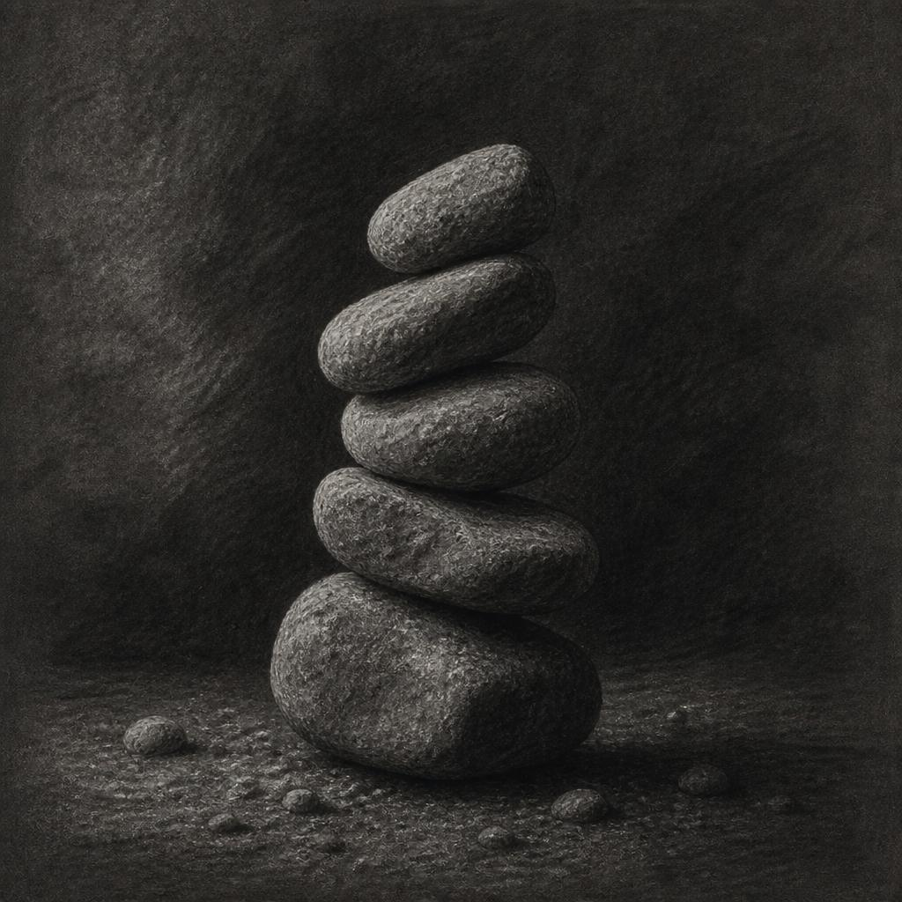
Często, kiedy myślimy o wielkich szczytach, myślimy przez pryzmat obrazu. Rzadziej o tym, jak bardzo trzeba wyjść poza swoją strefę komfortu, żeby zrealizować cel. Z uwagi na wiele zmiennych większe szczyty rozkłada się zwykle na etapy.
Z Gran Paradiso było podobnie.
Dnia pierwszego docieramy do schroniska Vittorio Emanuele II. 2735 metrów. Prawie trzygodzinny marsz z ciężkimi plecakami. Potem aklimatyzacja. Wspólny, rodzinny posiłek z innymi wspinaczami. I próba snu.
Tego dnia nie zdobyliśmy niczego. Weszliśmy wyżej i położyliśmy się spać. O to właśnie chodziło.
Pobudka o trzeciej w nocy. Czołówki na kaski i w drogę.
Zimno. W ciemności widać poruszające się świetliki.
W pewnej chwili zauważasz, że te świetliki idą różnymi drogami. Część w lewo, część prosto. Nikt się nie zatrzymuje. Każdy jest przekonany, że idzie dobrze.
Obie drogi były zresztą oznakowane. Tylko że dostrzeżenie kilku kamieni ustawionych jeden na drugim, w nocy, w morzu innych kamieni — to sztuka. Po pewnej chwili widzimy, że świetliki znalazły jeszcze jedną drogę. Gwieździste niebo i symfonia świateł.
Szliśmy za ekipą, która przeszła potok. Kopczyki się zgadzały. Nasza mapa pokazywała, że idziemy w dobrym kierunku.
Nie sprawdziliśmy tylko jednego: czy to ta droga, którą chcieliśmy iść.
Były też ekipy, które kopczyków nie widziały wcale. Kiedy ktoś je wyprzedzał, zaczynały mieć problem z czytaniem terenu. Część uznała, że pójdzie za nami.
To śmieszne, jak w trudnych warunkach ufamy innym ludziom.
Był moment, w którym nie widzieliśmy ścieżki i trzeba było trochę się powspinać. W nocy. Przy ograniczonej widoczności. To miejsce odbiegało od tego, co widzieliśmy na materiałach sprzed wejścia.
Świt pokazał coś innego.
Byliśmy na Laveciau — lodowcu, którym idzie się od zupełnie innego schroniska. Ta sama góra, ten sam szczyt, ale wariant, którego nie planowaliśmy.
I ten lodowiec wyglądał zupełnie inaczej niż na materiałach, z których robiliśmy research przed wyprawą. Więcej szczelin. Seraki. Teren, który na zdjęciach wyglądał spokojnie.
Przerażające, jak głębokie potrafią być te szczeliny.
Mapa się nie zmieniła. My byliśmy gdzie indziej.
To nie był moment, w którym coś poszło źle. Może nie było tu złej decyzji. W końcu rzeczy się zgadzały. Kopczyki, inni wspinacze, mapa. Tylko trochę inny teren, niż planowaliśmy.
Widzieliśmy, gdzie jesteśmy, i zdaliśmy sobie sprawę, że zboczyliśmy z kursu. To nie znaczy, że nie znaliśmy otoczenia. Wiedzieliśmy, że jest inna droga. Wiedzieliśmy również o ferracie. Ale nie spodziewaliśmy się, że dojdziemy tam od strony innego lodowcowego podejścia.
Gdzieś w oddali zobaczyliśmy, że ekipa, która szła za nami, poszła w stronę ferrat. Nie wiem, czy je zrobili.
Do dziś nie wiem, czy wiedzieli, gdzie są.
Poszliśmy dalej. Na Schiena d'Asino nasza droga połączyła się z tą klasyczną. Od tego miejsca wszyscy szli już identycznie. Ci, którzy przyszli łatwiejszym wariantem, i my. Razem z kilkoma innymi ekipami, które szły tą samą drogą co my.
Na szczycie, zmęczeni, szybko zdaliśmy sobie sprawę, że to dopiero połowa przygody.
I chyba właśnie wtedy najlepiej widać, czy ktoś potrafi poruszać się w górach. Nie wtedy, kiedy wszystko idzie zgodnie z planem. Wtedy, kiedy plan przestaje odpowiadać terenowi.
Rozmowa rekrutacyjna jest bardzo podobnym środowiskiem.
Twoje portfolio może być dopracowane do ostatniego piksela. Case study wygląda jak idealnie zaplanowana wyprawa. Figma otwarta dokładnie tam, gdzie trzeba. Metoda pasuje do każdej okazji.
Wszystko lśni. Lśni niczym Twój nowy czekan. Wypolerowany. Bez żadnej skazy. Bez żadnej rysy.
Turysta przechodzący obok będzie pod wrażeniem. Doświadczony przewodnik szybko wyłapie niuanse.
Sprzęt może wyglądać świetnie — tylko czy ktoś go kiedykolwiek używał?
Dlatego dobry rekruter, zupełnie jak przewodnik, szybko odłoży na bok ładne obrazki i zapyta o coś innego. Dlaczego to zrobiłeś? Co tu było naprawdę ważne? A co, gdybyśmy zrobili odwrotnie? Czego nauczyłeś się na tym błędzie? Co zrobiłbyś dziś inaczej?
Zastanawialiśmy się kiedyś ze znajomymi, jak dziś wygląda cykl życia ogłoszenia o pracę.
Generujemy ogłoszenie. Klik. Na wygenerowane ogłoszenie przychodzą wygenerowane odpowiedzi. Klik. Wygenerowane historie. Klik. Wygenerowane prace. Klik.
Model opowiada te historie innemu modelowi. Przy kawie, która też jest wygenerowana.
Firma dostaje najlepszy output.
Z kim my właściwie rozmawiamy?
Enter.
I nikt nie robi tu nic głupiego. Kandydat generuje, bo trzystu innych generuje. Rekruter filtruje modelem, bo dostał trzysta zgłoszeń zamiast trzydziestu.
Narzędzie niczego nie zepsuło.
Tylko że człowiek produkuje dziś dowód dla maszyny, która ma go rozpoznać po tym dowodzie.
Aklimatyzacji nie da się przyspieszyć chęcią.
W górach nie wejdziesz zbyt wysoko i zbyt szybko tylko dlatego, że bardzo chcesz coś udowodnić. Organizm ma swoje tempo. Możesz mieć doskonałą kondycję i świetny plan, a mimo to wejść za szybko. Wtedy wysokość przypomni Ci, że przygotowanie do wejścia to nie to samo co gotowość na szczyt.
Z projektowaniem jest podobnie. Czasami tak bardzo chcemy pokazać, że wszystko potrafimy, że próbujemy od razu przeskoczyć poziom wyżej.
Ale coraz częściej to nie my chcemy wejść szybciej. To ktoś nas pcha. Awans po roku, bo brakuje ludzi. Junior prowadzący projekt, bo senior odszedł i nie ma kim go zastąpić. Tytuł, który przyszedł wcześniej niż doświadczenie.
Nikt nie robi tego złośliwie. Po prostu ktoś musi.
Podczas wspinaczki dochodzimy do momentu przekraczania granicy. Mięśnie pieką. Tętno daje o sobie znać. Potrzebujemy oddechu. To naturalne. Zawsze jest pewna granica.
Dlaczego więc w pracy myślimy, że jest inaczej? Multitasking. Automatyzujemy zadania po to, żeby dorzucić sobie kolejne. Nieustanne przebodźcowanie. Ciągły sprint pod górę.
Przychodzi taki czas, że nasz procesor po prostu nie nadąża. Czasami po prostu nie dasz rady. Nie pokonasz wysokości samą chęcią. Ani cudzą.
Najgorzej jest wtedy, kiedy warunki zmieniają się w kilka minut.
W Górach Fogaraskich złapała nas burza. Byliśmy na grani. Pioruny uderzały w wierzchołki obok — na tyle blisko, że hałas był fizyczny.
Huk armat. Wystrzały.
I wtedy zobaczyłem coś, czego nie zapomnę. Grupa przestała być grupą.
Jedni zaczęli zbiegać w dół. Inni chowali się pod kamieniami. A ktoś po prostu stał sparaliżowany. Każdy robił coś innego i każdy miał swoje uzasadnienie. Nikt nie zachował się głupio — po prostu każdy zachował się racjonalnie na swój własny sposób.
To jest znacznie trudniejsze niż sama burza. Bo nagle nie masz nad niczym kontroli, a sekundy decydują o mikrodecyzjach, których nikt nie zdąży skonsultować.
Znam to z pracy. Zmiana terminów. Klient wycofujący się z ustaleń. Nieprzewidziana awaria. Ustępstwa, żeby zdążyć na czas. Przycinanie zakresu. Projektanci zakochani w swoich rozwiązaniach. Ktoś eskaluje ponad głowami zespołu. Ktoś inny zmienia ustalenia. Chaotyczne spotkania, które mogłyby być mailem. I na koniec wzajemne nakręcanie się.
Każdy ruch z osobna może być sensowny. Zebrane razem tworzą chaos.
Zupełnie jak w górach, kiedy zaczynamy tracić kontrolę nad zmieniającą się sytuacją.
Bywa też odwrotnie. Zamiast chaosu dostajemy przerost formy.
Kiedy mamy rozwiązać prosty problem, a zamiast tego uruchamiamy cały podręcznikowy proces. Bo przecież „trzeba” zrobić discovery. Warsztat z dwudziestoma interesariuszami. Mapy, persony, dokumentacja, slajdy. A na końcu wrzucić to do portfolio. Cyk.
Bo przecież tak wygląda idealny proces. Bo przecież tak nas tego uczono.
Jeśli do przesunięcia jednego elementu przy skromnym budżecie angażujesz całą analitykę i potężny research, to jest czysty przerost formy nad treścią. To trochę tak, jakby wejść na spacerową Rysiankę w pełnym wspinaczkowym szpeju, łącznie z liną i karabinkami.
Albo na odwrót. Zamiast sięgnąć po rozwiązanie, które działa od lat, wymyślamy je od nowa. Bo proste wydaje się za mało oryginalne. A potem dorabiamy do tego uzasadnienie. Często z naszego bogatego katalogu. Kontekstu.
Bywa i tak, że warsztat nie służy temu, żeby się czegoś dowiedzieć. Służy temu, żeby dwadzieścia osób miało swoją karteczkę na tablicy i za trzy miesiące nie powiedziało: „ja o tym nie wiedziałem”.
To nie jest discovery. To spektakl.
Czasami potrzebny. Tylko nazwijmy go po imieniu. To jest budowanie poparcia, nie metoda projektowa.
Jest jeszcze jedna sytuacja, o której mówi się rzadko.
Czasami produkt nie jest górą, na którą wchodzisz. Jest kraterem, do którego wpadłeś. I w którym siedzisz po dziś dzień.
Zostały w nim lata złych decyzji, dług technologiczny, rzeczy zrobione naprędce, bo trzeba było dowieźć. I nagle ktoś przychodzi z audytem. Robi przegląd, wypisuje sto znalezisk. Każde poprawne.
I nie robi tego złośliwie. To naprawdę solidna robota. Ale gdyby przyszedł z trzema, to czy pomyślałbyś, że się przyłożył?
Tylko że nie ma ludzi. Nie ma budżetu. Firma musi w tym kwartale dowozić to, o co prosi klient.
Wtedy lista znalezisk nie jest mapą. Jest cudzym długiem wypisanym na kartce i podanym komuś, kto już siedzi na dole.
Z krateru wychodzi się odpowiednią techniką. Podciągasz się na linie, przekładasz prusik. Powoli, jednym ruchem naraz. Potem znowu, kolejnym.
Dlatego audyt bez priorytetów i bez kalkulacji kosztów to po prostu zbiór pretensji.
Takiego produktu nie wyprowadza się na prostą w kilka sprintów. Nawet z dwudziestoma utalentowanymi osobami na pokładzie. To są lata.
A może w tym całym sprincie zapominamy o jeszcze jednym? Może nie chodzi o to, że ktoś nie dowozi. Może jednak dowozi dokładnie to, o co go poproszono. Ale może nikt nie sprawdził, czy to jest to, co było na dany moment potrzebne?
Z takiego krateru rzadko wychodzisz z całym sprzętem. Zabierasz tylko to, co jesteś w stanie unieść.
Więc nie dorzucaj kolejnych stu problemów. Zacznij od trzech. Mierzalnych i takich, które naprawdę da się naprawić.
Czasami mamy bardzo ograniczone środki.
Czasami mamy drastycznie mało czasu.
Czasami musimy po prostu dowieźć.
I wtedy pojawia się prawdziwe pytanie: zatrzymujesz wyprawę, bo nie masz idealnej mapy? Czy uczysz się czytać teren na żywo?
Nie każda sytuacja wymaga pełnego procesu.
Nie każdy problem wymaga warsztatu.
Nie każda decyzja potrzebuje dwudziestu wywiadów.
Nie każdy projekt czeka na kolejny framework.
Zanim zaczniesz badania, warto zadać jedno pytanie: jaki wynik zmieniłby naszą decyzję?
Jeśli odpowiedź brzmi „żaden”, właśnie oszczędziłeś trzy tygodnie. I wszyscy wiedzą, na czym stoją.
Tymczasem kompetencji nie da się przyspieszyć wpisaniem ich do CV.
Seniority nie polega na tym, że zawsze znamy odpowiedź.
Polega na tym, że potrafimy zauważyć moment, w którym nasza wiedza przestaje wystarczać.
I wtedy potrafimy powiedzieć: „Nie wiem”.
koniec rozdziału 9 z 11 · do końca ok. 7 min
Via ferrata na Skalce
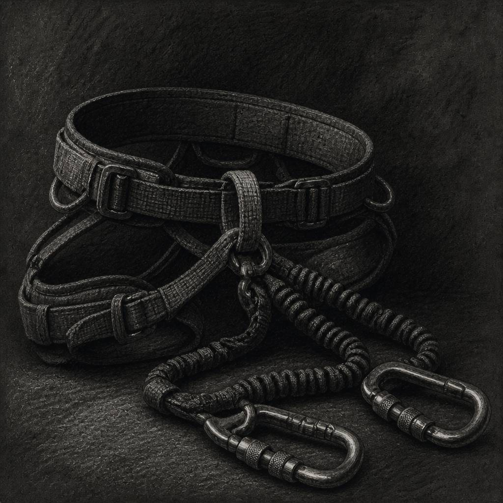
To była moja pierwsza przygoda z ferratami. Pojechaliśmy większą grupą znajomych.
Do dziś pamiętam, jak nieporadnie zakładałem uprząż. Jak niezgrabnie mocowałem lonżę przez łącznik. Sprzęt, który dla wszystkich wokół był oczywisty, w moich rękach nie chciał współpracować.
I pamiętam jeszcze jedno. Ten most śnił mi się przed wyjazdem.
Bałem się czegoś, czego nawet nie widziałem na oczy. Znałem go tylko ze zdjęć — osiemdziesiąt metrów stalowej konstrukcji rozpiętej między skałami. To wystarczyło, żeby wracał w nocy.
Zanim zdążyłem cokolwiek zacząć, zobaczyłem coś, czego się nie spodziewałem.
Kobieta wisiała na lonży, na wysokości koron drzew. Odpadła. Lonża się rozwinęła i po prostu wisiała, czekając na pomoc.
Patrzyłem na to kilka minut przed tym, jak sam miałem tam wejść.
Przeszedłem ten most.
I pamiętam moment, w którym stanąłem po drugiej stronie. Strach nie zniknął. Nadal tam był. Zmieniło się co innego — zacząłem wierzyć, że to jest możliwe.
Parę lat później byłem na Intersport Klettersteig. Ferrata na Großer Donnerkogel, którą wszyscy znają jako „Schody do nieba”. Pionowa drabina zawieszona nad przepaścią, dwa tysiące metrów, zdjęcie, które co sezon obiega internet.
Trochę mnie to bawi, kiedy o tym myślę. Człowiek, któremu śnił się most na Skalce.
Odwaga nie polega na tym, że przestajesz się bać. Czasami polega na tym, że robisz kolejny krok, mimo że nadal się boisz.
Ale nie zrobiłem tego sam.
Na żadną z tych gór nie wszedłem naprawdę sam. Czasami ktoś był przede mną i pokazywał drogę. Czasami to ja szedłem pierwszy. Czasami ktoś czekał. A czasami ktoś pociągnął mnie dalej, kiedy sam miałem już dosyć.
Byli ludzie, od których nauczyłem się rzeczy, których sam prawdopodobnie nigdy bym nie odkrył. Byli też tacy, którzy po prostu byli obok. I czasami to wystarczało.
Początkowo chciałem w tym miejscu wymienić wszystkie te osoby. Szybko jednak zrozumiałem, że nie potrafię. Taka lista zawsze byłaby niepełna.
Dlatego pisząc ten tekst, byłem myślami przy każdej osobie, z którą na którymkolwiek etapie zrobiłem coś, co wydawało mi się wtedy niemożliwe.
Dziś stoję po drugiej stronie liny.
Prowadzę zespół. To znaczy, że ktoś inny idzie teraz na swój pierwszy most, a ja mam być tym, kto stoi obok.
I odkryłem przy tym rzecz, której się nie spodziewałem.
Każdy chce dawać dużo feedbacku. Ukierunkować cudze rozwiązanie na swoją myśl. Pokazać lepszą drogę. Bo przecież każdy z nas wie najlepiej.
Tylko że to nie zawsze jest pomoc. Czasami to jest wspinanie za kogoś.
Każdy z nas myśli inaczej. Każdy jest zbiorem innych doświadczeń. I każdy czasami musi się przewrócić, żeby coś zrozumieć.
Długo próbowałem to nadrabiać. Poprawiać. Podpowiadać. Na dłuższą metę tak się nie da — i nie jest to zdrowe dla nikogo.
Asekuracja nie jest jedną rzeczą.
Kiedy ktoś idzie na wędce, lina jest nad nim. Odpadnie — zawiśnie w miejscu. Nic się nie stanie.
Kiedy prowadzi, lina jest pod nim. Sam decyduje, kiedy się wpiąć. Gdy odpadnie, może to być realny lot. Może nawet Ciebie mocno pociągnąć. Jedyne, co możesz zrobić, to dobrze wybrać linę na czas.
Ale kiedy idzie tradowo, Twoja asekuracja na niewiele się zda, jeśli źle osadzi punkty.
Cała trudność polega na tym, żeby rozpoznać, na jakim etapie ktoś jest. Bo trzymanie kogoś na wędce, kiedy dawno prowadzi, jest równie kosztowne jak puszczenie go na trad, zanim nauczył się osadzać punkty.
To ciekawe, że w górach nikt się nie obraża, że dziś idzie drugi. U nas prawie nikt nie powie, że w tym cyfrowym terenie woli iść za kimś.
Czasami zaś jesteśmy nadopiekuńczy. Kiedy ktoś potrzebuje Twojej pomocy, jesteś potrzebny. Kiedy przestaje potrzebować — trzeba znaleźć sobie inne miejsce w tej historii.
A może czasami nie chodzi o troskę, tylko o bycie tym, który wie lepiej?
Ale jest różnica między puszczeniem kogoś a zostawieniem go samego.
Ta kobieta na Skalce odpadła. To nie był wypadek. Lonża zadziałała dokładnie tak, jak miała zadziałać.
Odpadnięcie na dobrej asekuracji to lekcja. Bez asekuracji to zupełnie inna historia.
Rola prowadzącego nie polega na podciąganiu kogoś za linę. Polega na tym, żeby lot był bezpieczny.
I jeszcze jedno. Asekuracji nie widać, kiedy działa. Nikt nie dziękuje za to, że nic się nie stało.
Ale ona jest powodem, dla którego ktoś w ogóle spróbował.
Samodzielność nie oznacza samotności.
W projektowaniu łatwo wpaść w pułapkę myślenia, że dobry projektant powinien wszystko potrafić sam.
Sam znaleźć problem.
Sam zrobić research.
Sam podjąć decyzję.
Sam obronić rozwiązanie.
Sam dowieźć projekt.
Tylko że gór nie zdobywa się w ten sposób. I produktów też nie.
Najlepsze zespoły nie składają się z ludzi, którzy znają tę samą drogę. Składają się z ludzi, którzy patrzą na tę samą górę i widzą różne rzeczy.
Ktoś zauważy szczelinę.
Ktoś inny znajdzie przejście.
Ktoś powie, że pogoda się zmienia.
Ktoś przypomni, że może warto zawrócić.
A czasami ktoś po prostu powie:
„Dawaj. Jeszcze kawałek.”
koniec rozdziału 10 z 11 · do końca ok. 4 min
Grossglockner
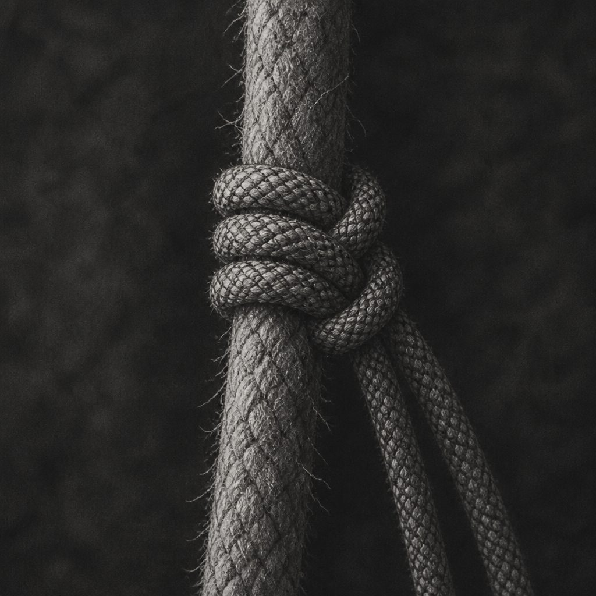
Pobudka po czwartej. Wyjście przed siódmą.
Za późno.
Na szczyt weszliśmy w dobrych warunkach. Pogoda trzymała, widoczność była, wszystko według planu. Problem zaczął się dopiero w drodze powrotnej.
Wiatr narastał z każdą godziną. Na lodowcu czułem, że realnie mnie znosi — człowieka, który razem z obciążonym plecakiem dobijał wtedy do stu kilogramów.
Potem zaczęły się granie. Eksponowane. Obite żelazną drogą.
Kiedy stoisz na takiej grani i wali w Ciebie wiatr, naturalnie zaczynasz się zastanawiać, czy to na pewno dobry pomysł. Iść dalej? Przeczekać? Zejść niżej na lodowiec i obejść inaczej?
Problem polega na tym, że nie ma idealnej odpowiedzi.
Przeczekanie kosztuje czas, a na wieczór zapowiadano burzę. Obejście oznacza teren, którego nie planowaliśmy i do końca nie znamy. Pójście dalej — to, co widzisz przed sobą.
Wróciliśmy tak, jak zakładaliśmy. Kilka godzin w dół, w pogodzie, która stopniowo się psuła.
Naszym jedynym błędem była ta godzina rano.
Rano to nie wygląda na decyzję.
Rano to jest dodatkowa herbata. Zaspane oczy. Jeszcze jedno sprawdzenie sprzętu. Dziesięć minut w cieple. Nogi, które jeszcze się nie rozgrzały.
Konsekwencje przychodzą dwanaście godzin później, na grani, w wietrze, kiedy nie masz już dobrych opcji — tylko mniej złe.
W projektach jest dokładnie tak samo. Najtrudniejsze momenty są zwykle konsekwencją czegoś, co przespaliśmy na starcie.
Tylko że wtedy to nie wyglądało na decyzję. To był jeden tydzień poślizgu. Jedna rozmowa przełożona na później. Jedno „ustalimy to w trakcie”.
Nikt tego nie zapisuje jako ryzyka. Zapisuje się to później, jako wniosek z retrospektywy.
W projektowaniu bardzo lubimy moment wejścia na szczyt.
Launch.
Sukces.
Nagroda.
Case study.
Publikacja.
Zdjęcie.
Cyk.
I koniec.
Tylko że w górach wejście na szczyt jest często połową drogi. Czasami tą łatwiejszą. Bo potem trzeba zejść.
A przecież właśnie wtedy zaczyna się prawdziwe życie produktu.
Użytkownicy robią rzeczy, których się nie spodziewaliśmy. Pojawiają się błędy. Zmienia się rynek. Trzeba coś uprościć. Coś usunąć. Coś napisać od nowa. Przyznać, że decyzja sprzed sześciu miesięcy była zła.
Zrobić rzeczy, których nie da się wrzucić do portfolio.
To nie jest spektakularne. Ale jest prawdziwe. I to właśnie jest większość życia produktu.
Ta część, której już nie uwieczniamy na zdjęciu. Bo przecież zdobyliśmy nasz szczyt. Prawda?
Czasem nie da się zejść tą samą drogą, którą się weszło.
Wtedy budujesz stanowisko i zjeżdżasz na linie. Sam osadzasz punkty. Sam je sprawdzasz. Nikt Ci nie powie, czy zrobiłeś to dobrze.
Dowiesz się w chwili, w której obciążysz linę.
Wchodziłeś, patrząc w górę. Zjeżdżasz tyłem. To nie jest ta sama umiejętność.
Jest jeszcze decyzja trudniejsza od zejścia.
Zawrócenie.
W maju byliśmy pod Rysami. We dwoje, po szkoleniu zimowym, z pełnym sprzętem. Cały dzień padał deszcz — nawet na wysokości Czarnego Stawu. Staliśmy tam i co kilka minut widzieliśmy schodzące lawinki.
Zawróciliśmy.
Przez pewien moment obserwowaliśmy z daleka kilka osób, które powiedziały: sprawdzam. Pod Bulą też zawróciły. Zysk nie był wart ryzyka.
Nic się nie stało. Nikogo nie zasypało. Nikt nie ucierpiał.
Poza naszymi ambicjami.
Zawrócenie jest jedyną decyzją w górach, której nie da się zweryfikować. Jeśli wszedłeś i wróciłeś cało — masz szczyt. Jeśli zawróciłeś i nic się nie wydarzyło — nie masz nic. Żadnego zdjęcia, żadnej historii, żadnego potwierdzenia.
Dlatego tak mało ludzi zawraca. Nie z braku odwagi. Z braku nagrody.
W projektowaniu jest tak samo.
Kiedy ostatnio widziałeś case study o projekcie, który ktoś zatrzymał?
Kiedy słyszałeś, że ktoś zatrzymał produkt po trzech miesiącach, żeby zaoszczędzić zespołowi rok?
Kiedy ktoś powiedział wprost przełożonemu: to nie ma sensu, zawracamy?
A to bywa najlepsza decyzja w całej karierze. Tylko że nie zostaje po niej nic.
W górach jest na to pewien sposób.
Godzinę zwrotu ustala się na dole. Przed wyjściem. Kiedy głowa jeszcze pracuje trzeźwo. O tej godzinie zawracasz, niezależnie od tego, jak blisko będziesz.
Nie ustala się jej na grani. Na grani każdy argument przegra ze szczytem, który widać wyżej. Który jest już na wyciągnięcie ręki.
Może w produktach warto spojrzeć na to z podobnej perspektywy? Zdefiniować warunek porażki. Spisać go wtedy, kiedy nikt nie jest jeszcze emocjonalnie zaangażowany.
Bo im więcej kroków wykonasz, tym trudniej jest zawrócić.
Najbardziej lubimy moment wejścia na szczyt. A zejście? Tego zwykle nie ma na zdjęciu.
Sukcesem nie jest samo zdobycie szczytu.
Sukcesem jest bezpieczny powrót do domu.
koniec rozdziału 11 z 11 · do końca ok. 1 min
Nie każdy, kto był na szczycie, jest alpinistą
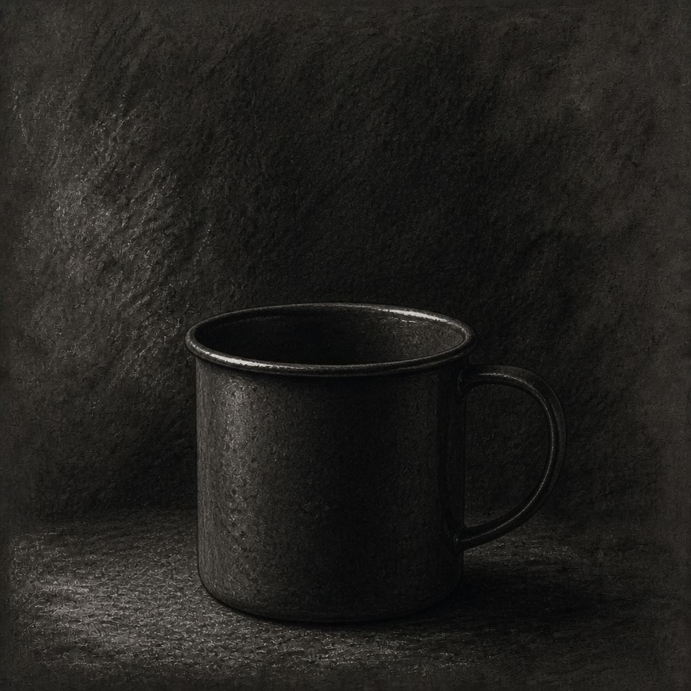
Pod koniec września czeka mnie kolejna górska przygoda. Prawdopodobnie trudniejsza od poprzednich. I chyba właśnie dlatego tak bardzo na nią czekam.
Jest w tym trochę strachu. Trochę ekscytacji. Dużo niewiadomych.
W pracy jest podobnie. Nowe wyzwania. Nowe problemy. Nowe tereny. Nie znam wszystkich dróg — byłbym szaleńcem, gdybym twierdził inaczej. Nie wiem, czy wybiorę najlepszą.
I chyba już nie chcę tego wiedzieć.
Bo nie chodzi o to, żeby znać wszystkie góry. Chodzi o to, żeby być gotowym wejść na kolejną.
Najlepsze rozmowy o górach nie odbywają się zresztą na szczycie. Odbywają się w schronisku, kiedy wszyscy już zeszli i nikt nie ma nic do udowodnienia.
Nie każdy, kto był na szczycie, jest alpinistą.
Ja też nie jestem.
Nie chcę zamknąć się w jednym określeniu. Jednej specjalizacji. Jednym narzędziu. Jednym procesie. Jednej mapie.
Nie chcę być człowiekiem, który całe życie chodzi jedną trasą tylko dlatego, że zna ją na pamięć.
Chcę umieć wejść na górę, której jeszcze nie znam.
Znaleźć drogę.
Zapytać „dlaczego?”.
Przyznać „nie wiem”.
Zmienić zdanie.
Zawrócić, kiedy trzeba.
Poprosić o pomoc.
I wejść na kolejny szczyt.
A co najważniejsze — czerpać z tego radość.
Bo szczyt nie jest końcem drogi. Jest tylko miejscem, z którego widać, ile gór jeszcze przed nami.